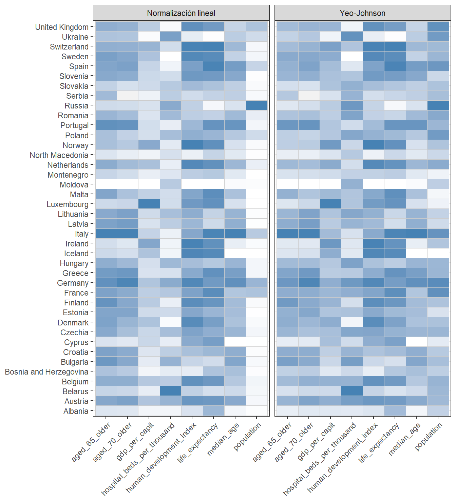
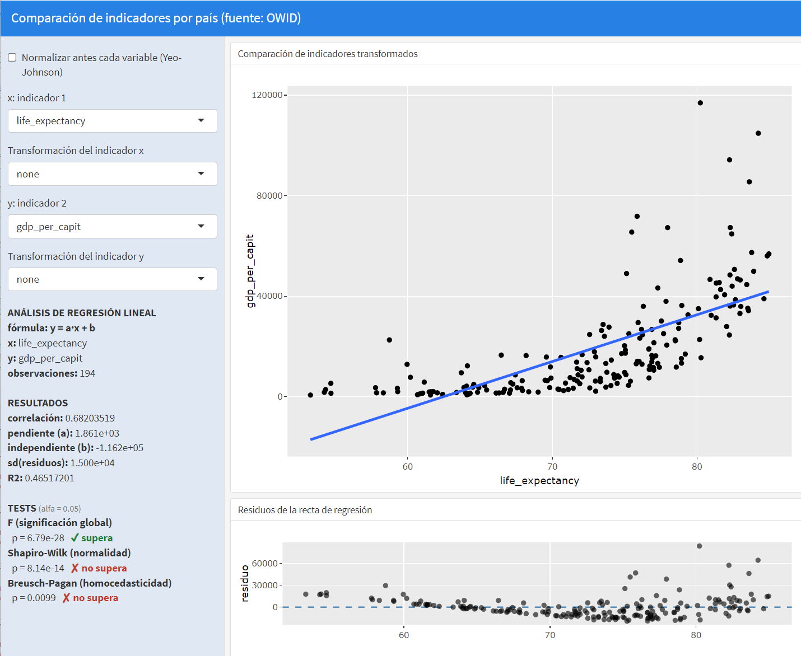
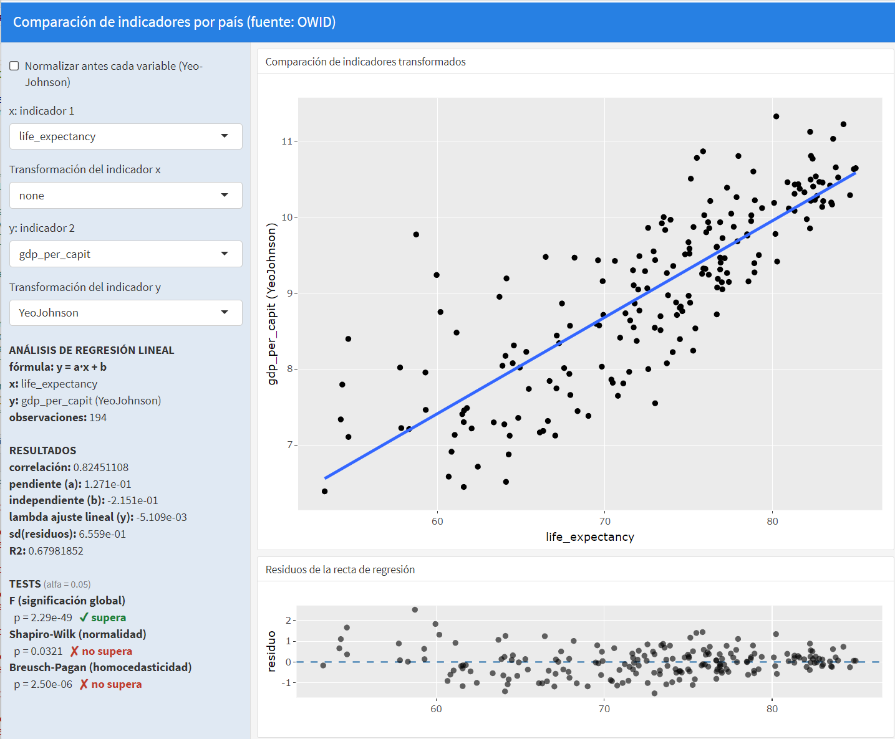
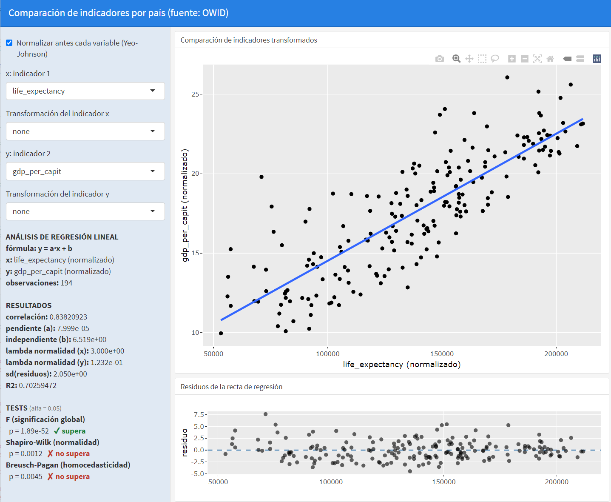
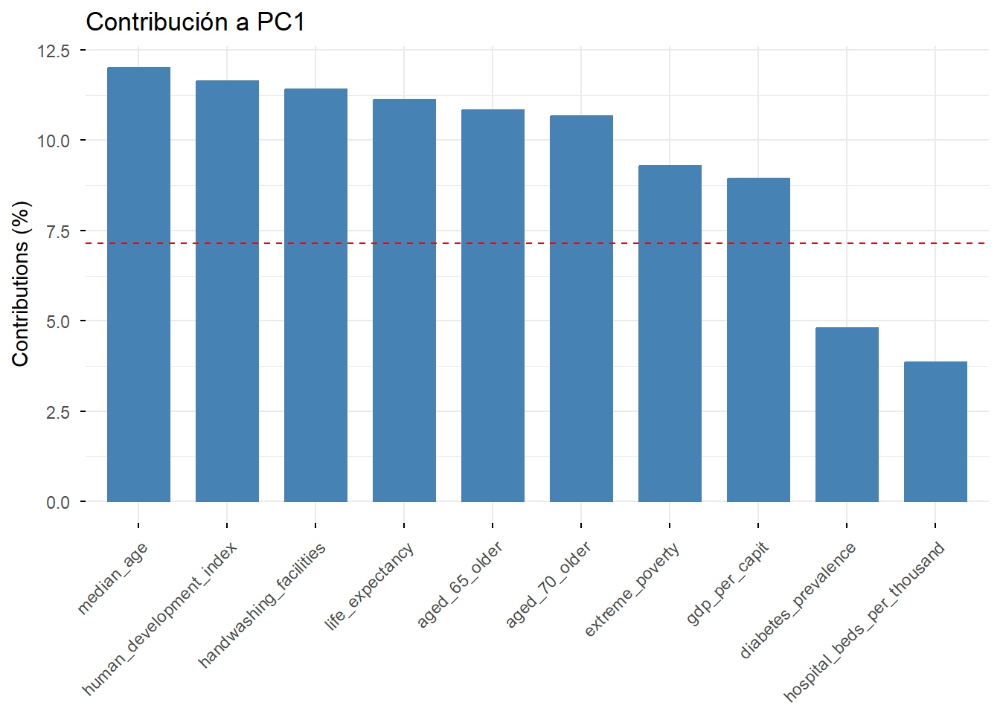
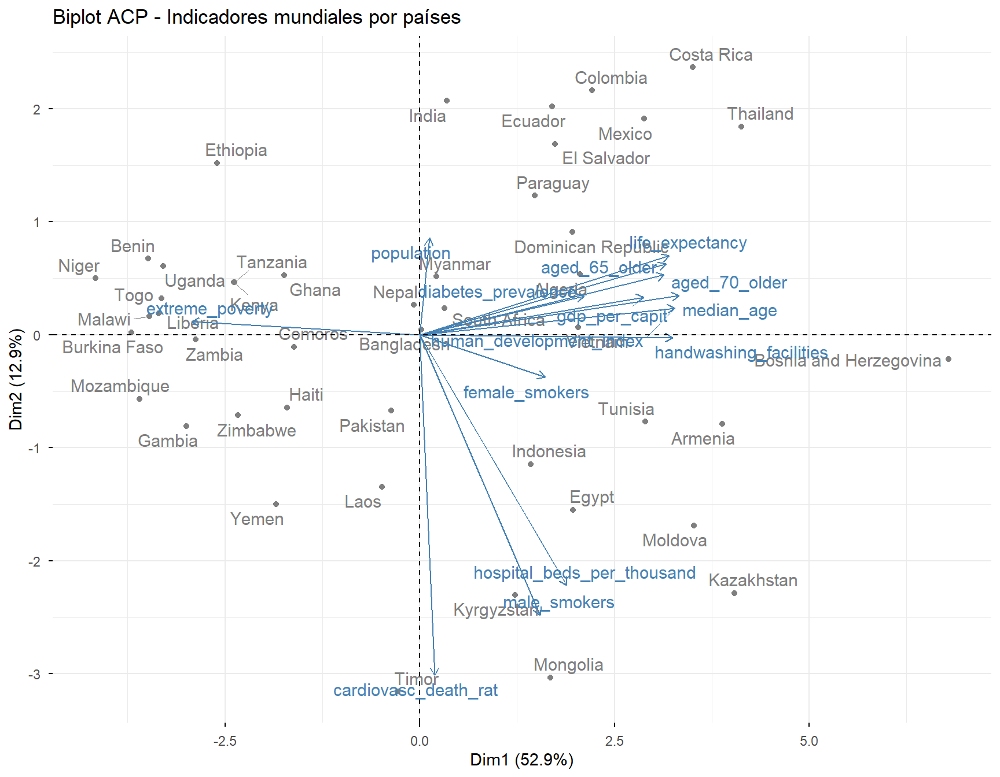
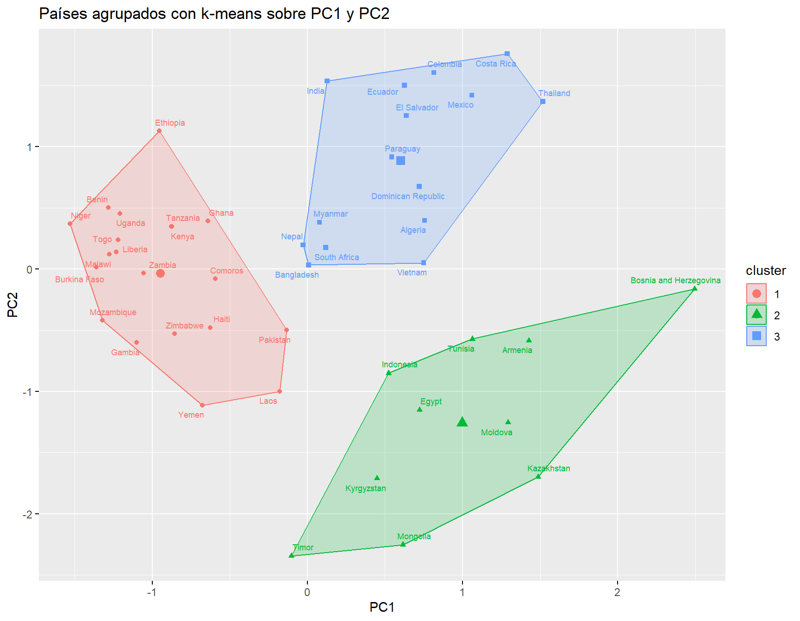
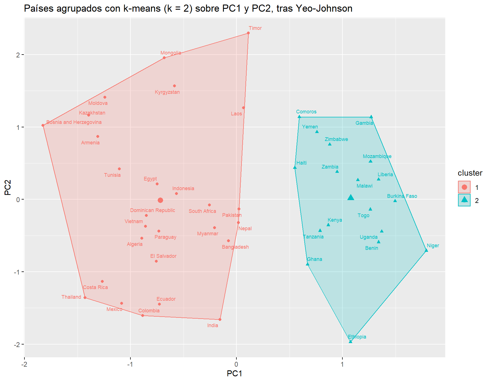

8 Análisis de atributos
Fecha última actualización: 2026-09-01
Instalación y carga de librerías
if (!require(highcharter)) install.packages('highcharter')
library(highcharter) # gráficos interactivos (Highcharts)
if (!require(factoextra)) install.packages('factoextra')
library(factoextra) # visualización de ACP y clustering
if (!require(openxlsx)) install.packages('openxlsx')
library(openxlsx) # lectura/escritura de Excel
if (!require(plotly)) install.packages('plotly')
library(plotly) # gráficos interactivos (ggplotly)
if (!require(ggplot2)) install.packages('ggplot2')
library(ggplot2) # gramática de gráficos
if (!require(tidyverse)) install.packages('tidyverse')
library(tidyverse) # manipulación y visualización de datos
source("../utilidades.R")# funciones auxiliares del cursoowid_country <- read.xlsx("https://ctim.es/AEDV/data/owid_country.xlsx",sheet=1) |> # países OWID
as_tibble()Librerías utilizadas en este capítulo
stats: la librería principal del capítulo en cuanto al cálculo, aunque no aparece en ningúnlibrary()porque forma parte de la instalación base de R y se carga siempre automáticamente. De ella salen las funciones matemáticas que hacen el trabajo de fondo:cor()(correlación, de Pearson o de Spearman),lm()(recta de regresión, usada directamente y también dentro degeom_smooth(method = lm)),prcomp()(el cálculo del ACP, núcleo de la segunda mitad del capítulo) ykmeans()(la agrupación de la última sección). A ellas se sumanscale()(tipificar las variables antes del ACP),na.omit()(descartar registros conNA) yeigen()(autovalores y autovectores, mencionada al deducir el ACP a mano).factoextra: visualiza sus resultados con gráficos ya preparados: biplot (fviz_pca_biplot), contribución de cada variable (fviz_contrib) y agrupaciones (fviz_cluster).highcharteryplotly: los gráficos interactivos con los que se exploran las correlaciones (hchartsobre la matriz de correlación y sobre el resultado deprcomp) y las proyecciones sobre las componentes.openxlsx: lectura de los datos de los ejemplos, en formato Excel.ggplot2ytidyverse: la visualización estática y la manipulación de datos de siempre.
Además, algunos ejemplos usan funciones auxiliares del fichero utilidades.R del curso: aedv_lm_analisis() para valorar un ajuste lineal, aedv_matriz_correlacion() para dibujar la matriz de correlación con plotly, y aedv_yeo_johnson() y aedv_yeojohnson_lambda() para la transformación de Yeo-Johnson.
8.1 Introducción
Técnicas de análisis de atributos cubiertas en este capítulo
El análisis de atributos tiene como objetivo estudiar, comparar y explorar las relaciones entre las variables numéricas (atributos) de un conjunto de datos. En este capítulo se abordan tres técnicas fundamentales:
- Regresión lineal y transformaciones no lineales (Yeo-Johnson): estudio de la relación entre dos variables numéricas.
- Matriz de correlación: visión global de las relaciones entre todos los atributos numéricos del conjunto de datos.
- Análisis de Componentes Principales (ACP / PCA): reducción de la dimensionalidad reemplazando las variables originales por nuevas variables —combinaciones lineales de las primeras— que representan de forma más compacta la información esencial.
8.2 La elección de los atributos en datos multidimensionales
Antes de aplicar cualquiera de las técnicas de este capítulo, hay que dar un paso previo que a menudo se pasa por alto: decidir qué atributos vamos a usar para comparar las observaciones. Cuando trabajamos con datos de áreas geográficas, que es lo habitual en esta asignatura, tenemos que fijar la colección de atributos que compararán las distintas áreas, y esa elección no es única: depende del objetivo del estudio.
Supongamos que disponemos de datos de población de los municipios canarios desglosados por año, sexo, nacionalidad (total / española / extranjera) y grupos de edad. Se trata de un dataset multidimensional: cada dato de población viene identificado por la combinación de varias variables categóricas. Es importante reflexionar sobre cómo combinar o seleccionar estos indicadores para generar nuestros atributos de forma coherente. Veamos algunas formas posibles de hacerlo para este ejemplo:
Análisis por sexo/nacionalidad. Creamos atributos combinando los valores posibles de sexo y nacionalidad (quitando las opciones “total”). Fijamos el grupo de edad a “TOTAL” y fijamos el año a un valor dado (o calculamos la media agrupando por años). Esto nos daría, para cada área geográfica, 4 atributos correspondientes a las combinaciones de sexo (2) y nacionalidad (2): española/hombre, española/mujer, extranjera/hombre y extranjera/mujer.
Análisis por grupos de edad. Fijamos el año a un valor dado (o promediamos por años), tomamos sexo y nacionalidad como “TOTAL”, y nos quedan como atributos los grupos de edad.
Análisis de la evolución por fechas. Tomamos sexo, nacionalidad y grupos de edad como “TOTAL” y usamos como atributos las fechas. Previamente filtramos las fechas para asegurar que todas las áreas geográficas tienen datos en todas las fechas seleccionadas, de modo que no queden huecos en la tabla.
Como vemos, hay múltiples formas de enfocar un análisis de atributos.
Idea clave: fijar dimensiones para definir atributos
En un dataset multidimensional, definir los atributos consiste en fijar (si procede) el valor de algunas dimensiones y tomar como atributos los valores de otras (que pueden combinarse entre sí). La condición imprescindible es que, para cada observación (cada área geográfica) y cada atributo seleccionado, exista un único valor; para garantizarlo hay que fijar todas las dimensiones que hayan quedado libres. Si alguna dimensión libre no se fija, la misma área geográfica tendría varios valores para el mismo atributo y la tabla dejaría de ser válida para el análisis.
Esta reflexión enlaza con el formato tidy visto en el capítulo de procesado de datos: partimos de una tabla en formato largo (una observación por fila, con sus variables categóricas) y, mediante filtrados, agregaciones (group_by + summarise) y un pivot_wider, la convertimos en la tabla “observaciones × atributos” que requieren la matriz de correlación y el ACP.
8.3 Relación entre dos variables
Correlación
En la sección 5.4 se introdujo el concepto de correlación en el contexto de las series temporales. En esta sección se profundiza en su uso para estudiar la relación entre dos variables numéricas cualesquiera.
La correlación es una medida que cuantifica el grado y la dirección de la relación lineal entre dos variables. Dados dos vectores de observaciones \(x_k\) e \(y_k\), la correlación viene dada por:
\[ r=\frac{\sum_{k=1}^m(x_{k}-\bar x)(y_{k}-\bar y)} {\sqrt{\sum_{k=1}^m(x_{k}-\bar x)^2\sum_{k=1}^m(y_{k}-\bar y)^2}} \]
Interpretación del coeficiente de correlación
El valor de \(r\) se encuentra siempre en el rango \([-1, 1]\) y se interpreta del siguiente modo:
- Si \(r=1\): existe una relación lineal positiva perfecta entre las variables; cuando una aumenta, la otra también lo hace, y todos los puntos del diagrama de dispersión caen exactamente sobre la recta de regresión.
- Si \(r=0\): no existe relación lineal entre las variables, y el diagrama de dispersión muestra una nube de puntos dispersa sin patrón aparente.
- Si \(r=-1\): existe una relación lineal negativa perfecta; cuando una variable aumenta, la otra disminuye.
Una propiedad importante de la correlación es que es invariante respecto a la unidad de medida (siempre que la transformación entre unidades sea lineal): da igual medir la población en millones o en miles, o una temperatura en grados Celsius o Fahrenheit, el valor de la correlación no cambia.
Correlación de Pearson y correlación de Spearman
El coeficiente \(r\) anterior es la correlación de Pearson, que mide la fuerza de la relación lineal. Cuando la relación entre dos variables es no lineal pero sí monótona (una crece siempre que la otra crece, aunque no a ritmo constante), Pearson la infravalora. En esos casos se usa la correlación de Spearman, \(\rho\), que no es más que la correlación de Pearson calculada sobre los rangos (las posiciones ordenadas) de los datos en lugar de sobre sus valores. Por ello:
- Detecta cualquier relación monótona, sea o no lineal, y alcanza el valor \(\pm 1\) cuando una variable es una función monótona perfecta de la otra.
- Es robusta frente a valores atípicos e invariante ante transformaciones monótonas (logaritmos, raíces, etc.): aplicar un \(\log\) no altera su valor.
- Comparar ambas es un diagnóstico útil: si Spearman es claramente mayor (en valor absoluto) que Pearson, la relación es monótona no lineal y conviene valorar una transformación de las variables (como la de Yeo-Johnson que veremos más adelante).
En R se calcula añadiendo method = "spearman" a la función cor: cor(x, y, method = "spearman").
A continuación se muestra un ejemplo que compara el total de delitos cometidos y el consumo total de pan y cereales por comunidades autónomas, a partir de datos del INE. La correlación se calcula con la función cor:
INE.CONSUMO.PAN.DELITOS <- read_csv("https://ctim.es/AEDV/data/INE.CONSUMO.PAN.DELITOS.csv") |> # datos del INE
as_tibble()
INE.CONSUMO.PAN.DELITOS## # A tibble: 19 × 3
## `Comunidades y Ciudades Autónomas` total.consumo.pan.cereales total.delitos
## <chr> <dbl> <dbl>
## 1 01 Andalucía 6957. 68853.
## 2 02 Aragón 1117. 8458.
## 3 03 Asturias, Principado de 927. 7825.
## 4 04 Balears, Illes 944. 10590.
## 5 05 Canarias 1805. 19146.
## 6 06 Cantabria 500. 4392.
## 7 07 Castilla y León 2130. 14720.
## 8 08 Castilla - La Mancha 1718. 11670.
## 9 09 Cataluña 6140. 58416.
## 10 10 Comunitat Valenciana 4167. 44809.
## 11 11 Extremadura 926. 7206.
## 12 12 Galicia 2389. 17904.
## 13 13 Madrid, Comunidad de 5289. 45146.
## 14 14 Murcia, Región de 1198. 12126.
## 15 15 Navarra, Comunidad Foral de 528. 4244.
## 16 16 País Vasco 1834. 15788.
## 17 17 Rioja, La 263 2372.
## 18 18 Ceuta 65.6 1759.
## 19 19 Melilla 62.8 1458.paste("correlación =",
cor( # correlación de Pearson
INE.CONSUMO.PAN.DELITOS$total.consumo.pan.cereales,
INE.CONSUMO.PAN.DELITOS$total.delitos)
)## [1] "correlación = 0.98987954033385"Observamos una correlación alta entre ambas variables. Vamos a ilustrar la relación entre las variables con un diagrama de dispersión:
p <- INE.CONSUMO.PAN.DELITOS |>
ggplot(aes(total.consumo.pan.cereales,total.delitos,label=`Comunidades y Ciudades Autónomas`)) + # pan vs. delitos
geom_point() + # puntos
geom_smooth(method = lm, se = FALSE) # recta de regresión
ggplotly(p) # versión interactiva
Observamos que como la correlación es alta, los puntos se encuentran próximos a la recta de regresión. Este ejemplo nos ilustra además que una alta correlación entre variables no implica que exista una causalidad entre las variables observadas, es decir, el consumo de pan y cereales no es un factor que provoque delincuencia. La correlación alta es debida a que ambas variables crecen con la población y la relación entre ellas es indirecta dado que las comunidades con más población consumen más pan y a la vez se producen más delitos. Establecer relaciones de causalidad, exclusivamente a partir de la correlación entre variables, es un error habitual que el buen científico de datos debe evitar. En este caso, la población sería lo que se denomina, una variable latente, es decir, una variable que explica el comportamiento observado pero que no se encuentra entre las variables estudiadas.
Recta de regresión
Al estudiar la posible relación lineal entre 2 variables utilizamos la recta de regresión que podemos expresar como \(y=ax+b\). Los coeficientes \(a\) y \(b\) de la recta de regresión se calculan minimizando el error cuadrático entre la recta y la nube de puntos dado por
\[ Error(a,b)=\sum_{k=1}^m (ax_k+b-y_k)^2 \] Vamos a medir la calidad del ajuste por la recta de regresión de dos formas distintas. En primer lugar usando el \(RMSE\) (root mean square error) dado por
\[ RMSE=\sqrt{\frac{\sum_{k=1}^m (ax_k+b-y_k)^2}{m}} \] Como vemos, el \(RMSE\) se calcula directamente a partir de la fórmula anterior \(Error(a,b)\) y podemos decir que los coeficientes de la recta de regresión son los que minimizan el \(RMSE\). Cuanto más pequeño sea el valor de \(RMSE\) mejor es el ajuste.
Otra forma de medir la calidad del ajuste es usar el coeficiente de determinación \(R^2\) dado por
\[ R^2=1 - \frac{\sum_{k=1}^m (ax_k+b-y_k)^2}{\sum_{k=1}^m (y_k-\bar y)^2} \]
\(R^2\) se mueve entre 0 y 1. Cuanto más cerca de 1, mejor es el ajuste por la recta de regresión, al igual que para la correlación, el valor 1 corresponde a una relación lineal perfecta. Si \(R^2\) vale cero no hay relación lineal entre las variables. El valor de \(R^2\), al igual que la correlación, es independiente de la unidad de medida de las variables o de si las variables están estandarizadas o no (estandarizar una variable consiste en restar la media y dividir por la desviación típica).
Relación entre \(R^2\) y la correlación \(r\)
Para la regresión lineal simple (una sola variable explicativa), se cumple que \(R^2 = r^2\), es decir, el coeficiente de determinación es el cuadrado de la correlación. Esto significa que una correlación de \(r = 0.9\) implica que el modelo lineal explica el \(81\%\) de la variabilidad de los datos (\(R^2 = 0.81\)). Esta relación no se cumple en regresión múltiple (con más de una variable explicativa).
La aproximación por regresión lineal genera unos residuos \(ax_k+b-y_k\) que podemos analizar usando el mismo tipo de tests estadísticos ya utilizados en el capítulo de series temporales. Concretamente la función aedv_lm_analisis en utilidades.R, ajusta la recta de regresión y devuelve en una tabla los valores que permiten juzgar el ajuste. La aplicamos al ejemplo anterior del consumo de pan y los delitos:
aedv_lm_analisis(INE.CONSUMO.PAN.DELITOS$total.consumo.pan.cereales, # ajusta la recta y evalúa el ajuste
INE.CONSUMO.PAN.DELITOS$total.delitos) |>
mutate(across(everything(), \(x) signif(x, 4))) # redondeamos a 4 cifras significativas## sigma R2 F_p_value SW_p_value BP_p_value pendiente termino_indep
## 1 2936 0.9799 7.388e-16 0.3632 0.05741 9.607 -914.8Cómo leer la salida de aedv_lm_analisis
sigma: desviación típica de los residuos. Como la media de los residuos de la regresión lineal es cero, se cumple que \(RMSE =\)sigma.- \(R^2\): coeficiente de determinación, ya descrito.
F_p_value: p-valor del estadístico F; valores muy pequeños indican que el modelo, globalmente, es significativo.F_p_value< 0.05 supera el test: el modelo es significativo.SW_p_value: p-valor del test de normalidad de Shapiro-Wilk sobre los residuos. Valores altos indican que no podemos descartar normalidad.SW_p_value> 0.05 supera el test: los residuos son compatibles con la normalidad.BP_p_value: p-valor del test de Breusch-Pagan. Valores altos indican que no podemos descartar homocedasticidad, es decir, que la dispersión de los residuos es constante a lo largo del rango de \(x\).BP_p_value> 0.05 supera el test: residuos compatibles con homocedasticidad.pendienteytermino_indep: los coeficientes \(a\) y \(b\) de la recta \(y = ax + b\).
8.4 La transformada Yeo-Johnson
Transformar variables (por ejemplo aplicar un logaritmo) puede ser una herramienta muy útil en el contexto del análisis de atributos. La transformada no-lineal de Yeo-Johnson, ([YeJo00]), \(T(y;\lambda)\) que depende de un parámetro \(\lambda\) se usa habitualmente para transformar variables y se define como:
\[ T(y;\lambda)=\left\{ \begin{array} [c]{ccc}% \frac{(y+1)^{\lambda}-1}{\lambda} & si & y\geq0,\quad\lambda\neq0\\ \log(y+1) & si & y\geq0,\quad\lambda=0\\ -\frac{(-y+1)^{2-\lambda}-1}{2-\lambda} & si & y\leq0,\quad\lambda\neq2\\ -\log(-y+1) & si & y\leq0,\quad\lambda=2 \end{array} \right. \]
A continuación presentamos la gráfica de esta transformada para diferentes valores del parámetro \(\lambda\)
Figure 8.1: Gráfica de la transformada de Yeo-Johnson para diferentes valores del parámetro lambda
El uso más habitual de la transformada de Yeo-Johnson es la aproximación a una normal de la distribución de una variable reduciendo su asimetría y el peso de los valores extremos.
La asimetría (skewness) mide cuánto se aparta la distribución de una variable de la forma simétrica de la campana de Gauss. Dado un vector de observaciones \(x_i\), con media \(\bar x\) y \(n\) observaciones, se calcula como
\[ g_1=\frac{m_3}{m_2^{3/2}}, \qquad m_k=\frac{1}{n}\sum_{i=1}^n(x_i-\bar x)^k \]
es decir, el momento central de tercer orden (\(m_3\)), que se anula cuando la distribución es simétrica, dividido entre el de segundo orden (\(m_2\), la varianza) elevado a \(3/2\) para que el resultado no dependa de la unidad de medida de \(x\). Se interpreta así:
- Asimetría \(\approx 0\): distribución aproximadamente simétrica, con la misma forma a ambos lados de la media.
- Asimetría \(> 0\) (cola a la derecha): la mayoría de los valores se agrupan en la parte baja del rango y unos pocos valores extremos, muy por encima del resto, estiran una cola larga hacia la derecha.
- Asimetría \(< 0\) (cola a la izquierda): el caso contrario, con la cola larga hacia los valores bajos.
En R no hay una función de asimetría en el paquete base, pero la fórmula anterior se escribe directamente:
asimetria <- function(x) {
x <- x[!is.na(x)] # sin NA
m <- mean(x)
(sum((x - m)^3)/length(x)) / (sum((x - m)^2)/length(x))^(3/2) # m3 / m2^(3/2)
}En este contexto, el valor \(\lambda\) óptimo de la transformada de Yeo-Johnson se calcula minimizando la asimetría de la distribución resultante. Esa búsqueda la hace aedv_yeojohnson_lambda de utilidades.R, acotada al intervalo \([-1, 3]\) por lo que se explica más abajo.
Veamos como se aplica, por ejemplo, a colorear un mapa de calor donde habitualmente los colores se normalizan linealmente entre su mínimo y su máximo. Un indicador con asimetría alta —como population dentro de Europa, donde casi todos los países tienen unos pocos millones de habitantes salvo Rusia, que se dispara muy por encima del resto— deja casi toda la columna del mismo tono, porque el valor extremo por sí solo fija el máximo de la escala y aplasta al resto. Aplicamos Yeo-Johnson, reconstruimos la tabla de indicadores europeos y comparamos, para cada uno, su asimetría antes y después de transformarlo:
indicadores <- c("population", "median_age", "life_expectancy", "aged_65_older", # indicadores a comparar
"aged_70_older", "gdp_per_capit", "hospital_beds_per_thousand",
"human_development_index")
europa <- owid_country |>
filter(continent == "Europe", !is.na(aged_65_older)) |> # países de Europa
column_to_rownames(var = "location") |> # país como nombre de fila
select(all_of(indicadores)) # solo los indicadores de interés
tibble(
indicador = indicadores,
`asimetría original` = sapply(europa, asimetria), # asimetría sin transformar
lambda = sapply(europa, aedv_yeojohnson_lambda), # lambda óptimo por indicador
`asimetría tras Yeo-Johnson` = sapply(europa, function(col) # asimetría tras transformar
asimetria(aedv_yeo_johnson(col, aedv_yeojohnson_lambda(col))))
) |>
mutate(across(where(is.numeric), \(x) round(x, 2))) |> # redondeamos
knitr::kable(caption = "Asimetría de cada indicador antes y después de Yeo-Johnson, con el lambda estimado")| indicador | asimetría original | lambda | asimetría tras Yeo-Johnson |
|---|---|---|---|
| population | 2.56 | -0.01 | 0.00 |
| median_age | -0.02 | 1.04 | -0.01 |
| life_expectancy | -0.61 | 3.00 | -0.50 |
| aged_65_older | -0.48 | 2.35 | -0.11 |
| aged_70_older | -0.13 | 1.22 | -0.06 |
| gdp_per_capit | 1.10 | 0.40 | 0.01 |
| hospital_beds_per_thousand | 0.76 | -0.26 | 0.03 |
| human_development_index | -0.49 | 3.00 | -0.40 |
La transformación reduce claramente la asimetría de los indicadores más sesgados: en population, el más asimétrico de la tabla, la deja prácticamente en cero, y otro tanto ocurre con gdp_per_capit y hospital_beds_per_thousand. En los indicadores casi simétricos, como median_age, el \(\lambda\) estimado apenas se aleja de 1 —una transformación casi lineal— y el resultado cambia poco, como cabía esperar.
Repetimos ahora el mapa de calor coloreando con el indicador transformado en vez de con el original. Para poder compararlos, dibujamos los dos mapas juntos:
normalizar <- function(v) (v - min(v, na.rm = TRUE)) / (max(v, na.rm = TRUE) - min(v, na.rm = TRUE)) # a escala 0-1
# tabla larga con los dos coloreados, para dibujarlos en dos paneles
mapa_calor <- bind_rows(
europa |> mutate(across(everything(), normalizar)) |> # normalización lineal
rownames_to_column("pais") |> mutate(metodo = "Normalización lineal"),
europa |> mutate(across(everything(), \(col) # normalización tras Yeo-Johnson
normalizar(aedv_yeo_johnson(col, aedv_yeojohnson_lambda(col))))) |>
rownames_to_column("pais") |> mutate(metodo = "Yeo-Johnson")
) |>
pivot_longer(all_of(indicadores), names_to = "indicador", values_to = "color") # formato largo
mapa_calor |>
ggplot(aes(indicador, pais, fill = color)) + # celdas indicador x país
geom_tile(color = "grey80") + # celdas
facet_wrap(~ metodo) + # un panel por método
scale_fill_gradient(low = "white", high = "steelblue", na.value = "grey95") + # degradado de color
labs(x = NULL, y = NULL) + # sin títulos de eje
theme(axis.text.x = element_text(angle = 45, hjust = 1), legend.position = "none") # ticks inclinados, sin leyenda
Figure 8.2: El mismo mapa de calor coloreado con normalización lineal y con Yeo-Johnson
La diferencia es especialmente visible en population: con la normalización lineal, 21 de los 40 países quedan por debajo de 0.05 —es decir, en un blanco en el que no se distinguen entre sí—, porque Rusia fija sola el máximo de la escala; con Yeo-Johnson solo queda ahí 1, y el resto de la columna muestra tonos donde antes no había ninguno.
Un límite de la estimación automática del lambda
Sin acotar, la búsqueda del \(\lambda\) de máxima verosimilitud puede alejarse mucho de valores razonables. Para una variable ya casi simétrica, como life_expectancy o human_development_index, el óptimo sin restricciones se dispara:
sapply(europa[c("life_expectancy", "human_development_index")], # dos indicadores casi simétricos
\(col) round(aedv_yeojohnson_lambda(col, intervalo = c(-1, 15)), 2)) # lambda sin acotar## life_expectancy human_development_index
## 9.87 9.87y todo ello para perseguir una mejora casi inapreciable de la asimetría. Por eso aedv_yeojohnson_lambda acota la búsqueda a \([-1, 3]\) por omisión. Con esa cota, estos dos indicadores se quedan pegados al límite superior (\(\lambda = 3\)) sin llegar a corregir del todo su asimetría, y esa es justamente la señal de que su óptimo real está fuera del intervalo. No es un problema para colorear —el resultado sigue siendo una transformación monótona válida—, pero conviene saber leer esa cota: un \(\lambda\) en el extremo del intervalo indica que la variable no se beneficia especialmente de esta transformación, no que la transformación haya fallado.
Otra aplicación de Yeo-Johnson es intentar mejorar la relación lineal entre dos variables, para ello se aplica la transformada a una sola de las variables y se calcula \(\lambda\) para que el valor de \(R^2\) sea el mayor posible.
En el cuadro de mandos Dashboard3.Rmd, se combinan las opciones de usar Yeo-Johnson para normalizar las variables con la de mejorar el ajuste lineal : si se selecciona el primer checkbox se normalizan las variables y si se selecciona la opción YeoJohnson en el desplegable del indicador, se calcula automáticamente el valor de \(\lambda\) que suministra un mejor ajuste lineal entre las variables y se imprime su valor en la primera columna. Para valorar la calidad del ajuste obtenido, en esa primera columna se imprimen los siguientes valores :
correlación: el valor de la correlación estudiado anteriormente.
sd(residuos): la desviación típica de los residuos. Como la media de los residuos de la regresión lineal es cero, se cumple que \(RMSE=\)sd(residuos).
\(R^2\): el coeficiente de determinación. El criterio utilizado para calcular \(\lambda\) en la transformada de Yeo-Johnson es maximizar este valor.
Los valores de \(\lambda\) estimados para normalizar o mejorar el ajuste lineal (si las opciones correspondientes están activadas).
Los p-valores de los tres tests de
aedv_lm_analisisdescritos más arriba, cada uno con un ✔ o un ✘ según se supere o no.
Debajo del diagrama de dispersión, el cuadro de mandos Dashboard3.Rmd dibuja además los residuos de la recta frente a la variable x, que son la lectura gráfica de los tests de Shapiro-Wilk y Breusch-Pagan.
Al estudiar en este cuadro de mandos la relación entre los atributos life_expectancy y gdp_per_capit observamos en la siguiente imagen que no existe una buena relación lineal entre ellos:

La correlación es de \(0.68\) y el \(R^2\) de \(0.47\). Los residuos delatan el problema mejor que ningún número: en lugar de repartirse en una banda de anchura constante alrededor del cero, se abren en forma de embudo hacia la derecha —los países de mayor esperanza de vida se apartan de la recta mucho más que el resto—, y por eso el test de Breusch-Pagan no se supera (\(p=0.0099\)).
Sin embargo, al activar la opción “YeoJohnson” en el cuadro de mandos se aplica la transformada Yeo-Johnson a la segunda variable y, como podemos observar en la siguiente imagen, obtenemos un ajuste lineal mucho mejor con un valor de \(\lambda=-5.1\cdot 10^{-3}\), tan próximo a cero que la transformación es, en la práctica, un logaritmo. Ello nos indica que existe una relación no-lineal entre ambas variables que ha sido capturada usando la transformación de Yeo-Johnson.

La correlación sube a \(0.82\) y el \(R^2\) a \(0.68\), y el embudo de los residuos desaparece: ahora ocupan una banda de anchura parecida a lo largo de todo el rango.
El cuadro de mandos ofrece una tercera vía, la casilla Normalizar antes cada variable (Yeo-Johnson) de la parte superior: en vez de transformar y para que se ajuste a x, aplica Yeo-Johnson a cada variable por separado, buscando para cada una el \(\lambda\) que la aproxima a una distribución normal. El criterio es distinto —solo interviene la propia variable, no la otra— y es el que se desarrolla en la sección siguiente.

El resultado es incluso algo mejor que el anterior (correlación \(0.84\) y \(R^2=0.70\)), y ahora se imprime un \(\lambda\) por variable: \(\lambda=0.123\) para gdp_per_capit y \(\lambda=3\) para life_expectancy. Este último merece atención: \(3\) es justo el extremo del intervalo de búsqueda, la señal —sobre la que volveremos— de que la esperanza de vida, que ya era casi simétrica, no se beneficia de esta transformación. Nótese también que los valores del eje horizontal dejan de ser años para convertirse en cifras de cinco dígitos: al elevar prácticamente al cubo, la variable transformada pierde toda relación con sus unidades originales. Es irrelevante para medir la relación entre las dos variables, pero conviene tenerlo presente al leer los ejes.
Transformar mejora el ajuste, pero no arregla los residuos
En las tres imágenes el test F se supera con holgura, y los de Shapiro-Wilk y Breusch-Pagan no se superan en ninguna. Conviene no confundir dos cosas: las transformaciones aplicadas buscan linealizar la relación entre las dos variables —y lo consiguen, como muestra la subida del \(R^2\) de \(0.47\) a \(0.70\)—, mientras que esos dos contrastes interrogan a los residuos del ajuste, que es una pregunta distinta. Que cada variable por separado se aproxime a una normal no implica que lo hagan los residuos de la recta que las relaciona.
Que un ajuste sea claramente mejor que otro y aun así siga sin superar los contrastes es la situación habitual con datos reales, y no invalida el análisis: lo que indica es que los intervalos de confianza y los p-valores del modelo deben tomarse con cautela.
8.5 La matriz de correlación
La matriz de correlación se obtiene calculando la correlación para todos los pares de atributos y poniendo el resultado en forma de matriz. Resulta muy útil para tener una visión global de las relaciones entre todos los atributos. Por ejemplo, en la siguiente gráfica interactiva visualizamos la matriz de correlación de la tabla owid_country. Previamente hay que quitar las variables no numéricas, puesto que la correlación solo se calcula para variables numéricas y además hay que eliminar los valores NA antes de hacer el cálculo. Para dibujar la matriz de correlación usaremos la función aedv_matriz_correlacion().
owid_country |>
select(-location,-continent,-iso_code) |> # eliminamos de la tabla las variables no-numéricas
cor(use='complete.obs') |>
aedv_matriz_correlacion(show_values = TRUE) # versión interactiva con plotly
Figure 8.3: Matriz de correlación usando plotly
De la exploración de los valores de correlación, observamos, que aged_65_older y aged_70_older están muy relacionadas, que population y cardiovasc_death_rat están muy poco relacionadas con el resto de variables y que extreme_poverty, tiene, en general, correlación negativa con el resto de variables, es decir que cuando esta variable crece, las otras decrecen.
Las matriz anterior usa la correlación de Pearson (relación lineal). Repitiendo el cálculo con method = "spearman" obtenemos la matriz de correlación de Spearman, que mide la relación monótona sobre los rangos. Comparar ambas es útil: los pares cuya correlación de Spearman sea sensiblemente mayor (en valor absoluto) que la de Pearson señalan una relación monótona no lineal, candidata a mejorar con una transformación.
owid_country |>
select(-location, -continent, -iso_code) |> # eliminamos las variables no-numéricas
cor(use = 'complete.obs', method = 'spearman') |> # matriz de correlación de Spearman (sobre rangos)
aedv_matriz_correlacion(show_values = TRUE,
title = "matriz de correlación de Spearman")
Figure 8.4: Matriz de correlación de Spearman usando plotly
Por ejemplo, las variables cuya relación es monótona pero no lineal —como gdp_per_capit frente a life_expectancy, que en la sección de la transformación de Yeo-Johnson se linealizaba— presentan una correlación de Spearman más alta que la de Pearson.
Matriz de correlación tras normalizar con Yeo-Johnson
Existe una tercera vía, a medio camino entre las dos anteriores: normalizar cada variable por separado con Yeo-Johnson —tal como se hizo en la casilla del cuadro de mandos— y calcular después la correlación de Pearson de siempre sobre las variables ya transformadas. La idea es quitar de en medio la asimetría y los valores extremos, que son los que hacen que Pearson infravalore una relación monótona, sin renunciar a medir sobre los valores (como hace Spearman, que solo mira el orden).
Como el \(\lambda\) de cada variable se estima con aedv_yeojohnson_lambda y se aplica con aedv_yeo_johnson, todo el cálculo cabe en un across:
indicadores_num <- owid_country |>
select(-location, -continent, -iso_code) # eliminamos las variables no-numéricas
cor_yj <- indicadores_num |>
mutate(across(everything(), \(v) # normalizamos cada variable con SU lambda
aedv_yeo_johnson(v, aedv_yeojohnson_lambda(v)))) |>
cor(use = 'complete.obs') # Pearson, pero sobre las variables ya normalizadas
aedv_matriz_correlacion(cor_yj, show_values = TRUE,
title = "matriz de correlación tras Yeo-Johnson")Figure 8.5: Matriz de correlación tras normalizar cada variable con Yeo-Johnson
El resultado se parece mucho más a la matriz de Spearman que a la de Pearson, y no es casualidad: las dos técnicas neutralizan el efecto de la asimetría, cada una a su manera. Midiendo la diferencia media entre matrices sobre estos datos, la de Yeo-Johnson se aparta de la de Spearman en 0.031 de media, frente al 0.075 que la separa de la de Pearson.
El cambio más llamativo respecto a Pearson lo protagoniza el par population / hospital_beds_per_thousand, que pasa de un \(-0.19\) casi inapreciable a un \(-0.46\): una relación que la asimetría extrema de population —recuérdese, la variable más sesgada de la tabla— mantenía prácticamente invisible.
Cuál de las tres matrices usar
- Pearson sobre los datos originales es la referencia y la que hay que mirar primero, pero infravalora las relaciones monótonas no lineales y es sensible a los valores extremos.
- Spearman es la más robusta y no exige transformar nada; a cambio, descarta la magnitud de los datos y se queda solo con el orden.
- Yeo-Johnson + Pearson conserva los valores y suele quedar cerca de Spearman. Su ventaja no está tanto en la matriz en sí como en que deja las variables ya preparadas para lo que venga después —en particular para el ACP/PCA de la sección siguiente, que es un método lineal y agradece variables simétricas—. Su inconveniente es que añade un \(\lambda\) estimado y la transformación hace que perdamos el sentido físico de las variables resultantes (aunque eso para la ACP/PCA no es relevante)
Comparar las tres es, en sí mismo, un buen diagnóstico: los pares en los que las tres coinciden son relaciones lineales sólidas; aquellos en los que Pearson se descuelga de las otras dos son los candidatos a esconder una relación no lineal.
8.6 Análisis de componentes principales (ACP)
En lo que sigue, para desarrollar los conceptos de esta sección, denotaremos por el vector \(x_j=(x_{1j},x_{2j},..,x_{mj})\) a cada atributo (o variable), donde \(m\) representa el número de observaciones (número de países en nuestro ejemplo). Es decir, que si el primer atributo (\(j=1\)) es la población, entonces, \(x_{i1}\) representaría la población del país \(i\).
Diremos que una variable \(x_j\) no aporta información nueva a nuestro análisis de datos si se puede obtener a partir de las otras variables. Es decir si
\[ x_{ij}=F(\{x_{ik}\}_{k\neq j}) \quad \forall i \]
para una cierta función \(F\). Por tanto, podemos quitar \(x_j\) de nuestro análisis de datos sin perder información. En particular, si la correlación entre dos variables está cerca de 1 o -1, podemos quitar una de ellas porque una se puede obtener a partir de la otra. Por ejemplo, en la tabla owid_country se guardan como indicadores el porcentaje de personas mayores de 65 años y el de personas mayores de 70 años. Estos dos indicadores están muy relacionados entre sí. Si usamos el tablero de mando Dashboard3.Rmd, observamos que el factor de correlación es de \(0.99\), y por tanto, se puede calcular con precisión una en función de la otra a partir de la recta de regresión, que en este caso viene dada por
\[ \text{aged_70_older} = 0.68\cdot \text{aged_65_older} -0.39 \] Por tanto, podríamos eliminar el indicador de porcentaje de mayores de 70 años de nuestro análisis de datos sin perder información relevante. Otro ejemplo de variable que podríamos desechar son las variables que poseen un valor constante (en este caso la función \(F\) sería una constante). Este tipo de variables se consideran desechables porque no aportan nada a la hora de discriminar entre unos países y otros.
En esta sección vamos a estudiar cómo combinar las variables y reducir su número sin perder información relevante. A este problema se le denomina reducción de la dimensionalidad.
Una limitación de las técnicas que vamos a analizar es que solo usaremos combinaciones lineales de las variables, es decir sumas de variables multiplicadas por unos coeficientes, eso deja fuera dependencias más complejas como las que vienen dadas por la función logaritmo o la transformación de Yeo-Johnson utilizadas en el cuadro de mandos Dashboard3.Rmd. Una forma de añadir transformadas no-lineales sería, antes de empezar con nuestro análisis lineal, añadir/sustituir en la tabla, variables que sean el resultado de aplicar transformaciones no-lineales a las variables iniciales. Por ejemplo, a la vista de los resultados del cuadro de mandos Dashboard3.Rmd, podríamos sustituir la variable gdp_per_capit por log(gdp_per_capit) que posee una mejor relación lineal con las otras que la variable inicial.
El análisis de componentes principales, ACP, (PCA en inglés) transforma las variables \(x_j\) en otras nuevas, \(y_j\), haciendo combinaciones lineales de las iniciales. El objetivo del ACP es buscar las combinaciones lineales de \(x_j\) que maximizan la varianza de \(y_j\) en orden descendente, es decir, \(y_1\) es la combinación lineal con mayor varianza posible e \(y_n\), es la combinación lineal con menor varianza posible. Cuando la varianza de \(y_j\) es muy pequeña consideramos que no aporta información relevante y la desechamos, de esta forma reducimos la dimensionalidad quedándonos solo con las variables \(y_j\) con varianza significativa, que son las que denominamos componentes principales.
El ACP en 4 pasos, sin matemáticas
Si prefieres saltarte la demostración algebraica, esta es la idea esencial del ACP:
- Tipificar las variables (restar la media y dividir por la desviación típica) para que todas pesen por igual.
- Construir nuevas variables (las componentes principales) como combinaciones lineales de las originales, no correlacionadas entre sí.
- Ordenarlas de forma que la primera concentre la mayor varianza posible, la segunda la mayor varianza restante, y así sucesivamente.
- Quedarse con las primeras (las que acumulan la mayor parte de la varianza) y descartar el resto: así se reduce la dimensionalidad perdiendo poca información.
En la práctica, todo esto lo hace la función prcomp automáticamente; la sección siguiente explica por qué funciona.
Fundamento teórico ⚠️
⚠️ Sección de ampliación
Las subsecciones siguientes desarrollan la deducción algebraica del ACP —por qué las componentes principales resultan ser los autovectores de la matriz de covarianza— y la ilustran con un ejemplo calculado a mano. Son de ampliación: en una primera lectura puedes saltar directamente a la subsección Cálculo ACP con prcomp —donde el modelo se calcula automáticamente— y volver a estas deducciones más adelante. El resumen conceptual imprescindible ya está en el bloque El ACP en 4 pasos, sin matemáticas anterior.
Conceptos algebraicos necesarios ⚠️
Definición: El producto escalar de dos vectores \(u\) y \(v\) de tamaño n se define como \((u,v)=u_1v_1+\cdots + u_nv_n\). Los vectores siempre los consideraremos en vertical, es decir podemos escribir \((u,v)=u^Tv\), donde \(u^T\) es el vector traspuesto.
Definición: Una matriz cuadrada \(U\) es ortonormal (o unitaria) si se cumple \(U^TU=Id\), es decir que la traspuesta por ella misma es la matriz identidad. Por tanto, para una matriz ortonormal la inversa es la traspuesta.
Teorema: Los vectores columna de una matriz ortonormal \(U=(u_1,\cdots,u_n)\) (con \(u_k=(u_{1k},\dots,u_{nk})\)) cumplen que \((u_k,u_k)=1\) y si \(k\neq k'\) entonces \((u_k,u_{k'})=0\) es decir los vectores son perpendiculares.
Definición: el número real \(\lambda_k\) es un autovalor de la matriz cuadrada \(A\), si existe un vector \(u_k=(u_{1k},\dots,u_{nk})\), no nulo, denominado autovector, tal que \(Au_k=\lambda_k u_k\). Si \(u_k\) es autovector, entonces, al multiplicarlo por cualquier número diferente de cero, sigue siendo autovector. Por ello siempre podemos ajustar el autovector para que cumpla \((u_k,u_k)=1\).
Teorema: Si la matriz cuadrada \(A\) de dimensión n es simétrica, entonces posee n autovalores que podemos ordenar en forma decreciente, \(\lambda_1 \geq \lambda_{2} \geq \cdots \geq \lambda_n\) y además posee una matriz ortonormal de autovectores \(U=(u_1,u_2,..,u_n)\) formada por los autovectores \(u_k\) en columnas.
Teorema: Si \(X\) es una matriz cualquiera de tamaño mxn, entonces \(A=X^TX\) es cuadrada de tamaño nxn, simétrica y todos sus autovalores son mayores o iguales que cero.
Definición: Dados dos variables \(x_j\) y \(x_{j'}\), la covarianza \(Cov(x_{j},x_{j'})\) entre ellas se define como:
\[ Cov(x_{j},x_{j'})=\frac{\sum_{i=1}^m(x_{ij}-\bar x_j)(x_{i{j'}}-\bar x_{j'})} {m-1} \] donde \(m\) es el número de observaciones.
Definición: Si \(X=(x_1,x_2,...,x_n)\) es una matriz que representa \(n\) variables \(x_1,x_2,...,x_n\), la matriz de covarianza de \(X\) viene dada por la matriz \(\Sigma\) de dimensión \(n\times n\) cuyos elementos son \(\Sigma_{jj'}=Cov(x_{j},x_{j'})\)
Definición: Tipificar una variable, \(x_j\), consiste en restarle su media y dividirla por su desviación típica. Las variables tipificadas tienen media cero y varianza y desviación típica igual a 1.
Teorema: Si \(X=(x_1,x_2,...,x_n)\) es una matriz que representa \(n\) variables \(x_1,x_2,...,x_n\) tipificadas, entonces la matriz de covarianza \(\Sigma\) cumple:
\[ \Sigma=\frac{X^TX}{m-1} \] además
\[ \lambda_1+\lambda_2+..+\lambda_n=n \] donde \(\lambda_j\) son los autovalores de la matriz de covarianza \(\Sigma\). Además, como la matriz de covarianza \(\Sigma\) es proporcional a \(X^TX\), sus autovectores son los mismos y los autovalores de \(X^TX\) son los de \(\Sigma\) multiplicados por \(m-1\).
Fundamento matemático del ACP ⚠️
Consideremos n variables \(x_j\) (los vectores columna de nuestra tabla), y las observaciones en forma de matriz \(X=x_{ij}\) de tamaño mxn. Vamos a sustituir \(X\) por una nueva colección de variables \(Y=XU\) donde \(U\) es una matriz ortonormal de tamaño n. Es decir, las nuevas variables \(y_j=Xu_j\) son combinaciones lineales de las anteriores obtenidas a partir de una matriz ortonormal que se pueden expresar como :
\[ \begin{aligned} y_1 &= u_{11}x_1+u_{21}x_2+\cdots+u_{n1}x_n\\ y_2 &= u_{12}x_1+u_{22}x_2+\cdots+u_{n2}x_n\\ &\;\;\cdots \\ y_n &= u_{1n}x_1+u_{2n}x_2+\cdots+u_{nn}x_n \end{aligned} \]
El análisis por componentes principales es una técnica para elegir la matriz ortonormal \(U\) de tal manera que las variables \(y_j=Xu_j\) (las componentes principales) estén ordenadas de forma descendente en función de su varianza, es decir, la primera componente principal \(y_1=Xu_1\) corresponde a la combinación lineal de las variables originales que tiene la mayor varianza posible, \(y_2=Xu_2\) sería la combinación ortogonal a la anterior (\((u_1,u_2)=0\)) con la mayor varianza posible, \(y_3=Xu_3\) sería la combinación ortogonal a las anteriores (\((u_1,u_3)=0\) y \((u_2,u_3)=0\)) con la mayor varianza posible, y así sucesivamente. Cuanto mayor es la varianza de \(y_j\) más información contiene la variable en términos, por ejemplo, de distinguir entre las diferentes observaciones. Nótese que una variable con valor constante (es decir varianza cero) no aporta ninguna información para discernir entre unas observaciones y otras. Dado que las variables \(x_j\) pueden tener magnitudes y varianzas muy distintas, para equilibrar la aportación de cada variable, primero se tipifican, es decir se le resta su media y se divide por la desviación típica. Es decir, consideraremos que las variables \(x_j\) tienen media cero y desviación típica 1. Si la media de cada variable \(x_j\) es cero, la media de \(y_j=Xu_j\) que es una combinación lineal de \(x_j\) también tendrá media cero y por tanto su varianza será
\[\text{Var}(y_j)=\frac{\sum_{i=1}^m y_{ij}^2}{m-1}=\frac{y_j^Ty_j}{m-1}=\frac{u_j^TX^TXu_j}{m-1}\] la clave para maximizar la varianza son los autovectores de la matriz \(A=X^TX\). Si \(\lambda_j\) son los autovalores ordenados de \(A\) en forma descendente, es decir \(\lambda_1 \geq \lambda_2 \geq \cdots \geq \lambda_n\) y \(u_j\) sus correspondientes autovectores, entonces
\[\text{Var}(y_j)=\frac{u_j^TX^TXu_j}{m-1}=\frac{u_j^T\lambda_j u_j}{m-1}=\frac{\lambda_ju_j^T u_j}{m-1}=\frac{\lambda_j}{m-1}\] por tanto, el procedimiento para calcular las componentes principales de \(X\) se puede dividir en los siguientes pasos:
Tipificar las variables originales \(x_j\) para que tengan media cero y varianza 1.
Calcular los autovalores \(\lambda_j\) (ordenados de forma descendente) y autovectores \(u_j\) de la matriz \(X^TX\)
Las componentes principales son \(y_j=Xu_j\) y su varianza es \(\frac{\lambda_j}{m-1}\)
Ejemplo de ACP ⚠️
Para ilustrar el proceso del cálculo de las componentes principales vamos a tomar un caso sencillo extraído de la tabla owid_country donde usaremos 3 variables (\(x_1\)=human_development_index, \(x_2\)=aged_65_older y \(x_3\)=aged_70_older ) y las observaciones de 5 países (China, Canada, Nigeria, Brazil y Germany). Para calcular el ACP la tabla solo puede tener variables numéricas. Para conservar el nombre de los países se usa la función column_to_rownames que asigna los países como nombres de cada fila, de esta manera se gestionan como un elemento externo a la tabla y no interfieren con el cálculo del ACP.
data <- owid_country |>
filter( # filtramos los 5 países que se usarán
location == "China" |
location == "Canada" |
location == "Nigeria" |
location == "Brazil" |
location == "Germany"
) |>
column_to_rownames(var="location") |> # país como nombre de fila
select(human_development_index,aged_65_older,aged_70_older) # 3 variables de interés
data## human_development_index aged_65_older aged_70_older
## Brazil 0.765 8.552 5.060
## Canada 0.929 16.984 10.797
## China 0.761 10.641 5.929
## Germany 0.947 21.453 15.957
## Nigeria 0.539 2.751 1.447A continuación imprimimos las variables tipificadas usando la función scale y su matriz de correlación que muestra una alta correlación entre las variables .
## human_development_index aged_65_older aged_70_older
## Brazil -0.1409164 -0.4824390 -0.4932478
## Canada 0.8552170 0.6718445 0.5253853
## China -0.1652124 -0.1964691 -0.3389525
## Germany 0.9645488 1.2836202 1.4415691
## Nigeria -1.5136370 -1.2765565 -1.1347540
## attr(,"scaled:center")
## human_development_index aged_65_older aged_70_older
## 0.7882 12.0762 7.8380
## attr(,"scaled:scale")
## human_development_index aged_65_older aged_70_older
## 0.1646366 7.3049644 5.6320575data |>
scale() |>
cor(use='complete.obs') |> # matriz de correlación
hchart() # versión interactivaPor tanto la matriz \(X\) está definida por:
\[ \begin{array} [c]{cccc} & x_{1} & x_{2} & x_{3}\\ \text{Brazil} & -0.14 & -0.48 & -0.49\\ \text{Canada} & 0.86 & 0.67 & 0.53\\ \text{China} & -0.17 & -0.20 & -0.34\\ \text{Germany} & 0.96 & 1.28 & 1.44\\ \text{Nigeria} & -1.51 & -1.28 & -1.13 \end{array} \] Las nuevas variables \(y_j\) que vamos a construir como combinación lineal de \(x_1,x_2\) y \(x_3\) tienen la forma:
\[y_{j}=u_{1j}\left( \begin{array}{c} -0.14 \\ 0.86 \\ -0.17 \\ 0.96 \\ -1.51% \end{array}% \right) +u_{2j}\left( \begin{array}{c} -0.48 \\ 0.67 \\ -0.20 \\ 1.28 \\ -1.28% \end{array}% \right) +u_{3j}\left( \begin{array}{c} -0.49 \\ 0.53 \\ -0.34 \\ 1.44 \\ -1.13% \end{array}% \right) =Xu_{j}\]
Como \(y_j\) tiene siempre media cero, su varianza es \(\frac{y_j^Ty_j}{4}=\frac{u_j^TX^TXu_j}{4}\). Si \(u_j\) es un autovector normalizado de \(X^TX\) para el autovalor \(\lambda_j\), tendremos que la varianza de \(y_j\) es \(\frac{u_j^TX^TXu_j}{4}=\frac{\lambda_ju_j^Tu_j}{4}=\frac{\lambda_j}{4}\)
Calculamos ahora la matriz \(X^{T}X\): \[ X^{T}X=\left( \begin{array} [c]{ccc}% 4.00 & 3.85 & 3.68\\ 3.85 & 4.00 & 3.96\\ 3.68 & 3.96 & 4.00 \end{array} \right) \] A continuación, a mano, o usando cualquier software de cálculo matemático, calculamos la matriz ortonormal \(U\) con los autovectores de \(X^TX\)
\[U=\left( \begin{array} [c]{ccc}% 0.57 & 0.78 & 0.26\\ 0.58 & -0.16 & -0.79\\ 0.58 & -0.61 & 0.55 \end{array} \right) \]
Simultáneamente se calculan los autovalores de \(X^{T}X\) que son: \(\lambda_{1}=11.66\),\(\lambda_{2}=0.33\), y \(\lambda_{3}=0.01\) (observamos que la suma de los autovalores es aproximadamente \(12=n\cdot(m-1)=3\cdot4\)) y por tanto las desviaciones típicas de \(y_j\) son \(\sigma_j=\sqrt{\lambda_j/4}\), es decir: \(\sigma_1=1.71\), \(\sigma_2=0.29\), \(\sigma_3=0.06\). Las componentes principales quedan entonces como:
\[ \begin{array} [c]{c}% y_{1}=0.57 \cdot x_{1}+0.58 \cdot x_{2}+0.58 \cdot x_{3}\\ y_{2}=0.78 \cdot x_{1}-0.16 \cdot x_{2}-0.61 \cdot x_{3}\\ y_{3}=0.26 \cdot x_{1}-0.79 \cdot x_{2}+0.55 \cdot x_{3}% \end{array} \]
y, por tanto, la nueva tabla de valores, \(Y=XU\), da como resultado:
\[ \begin{array} [c]{cccc} & y_{1} & y_{2} & y_{3}\\ \text{Brazil} & -0.65 & 0.27 & 0.08\\ \text{Canada} & 1.18 & 0.24 & -0.02\\ \text{China} & -0.40 & 0.11 & -0.073\\ \text{Germany} & 2.13 & -0.33 & 0.02\\ \text{Nigeria} & -2.27 & -0.28 & -0.00 \end{array} \]
El signo de una componente principal es arbitrario
Si \(u_j\) es un autovector, \(-u_j\) también lo es: ambos definen la misma dirección y solo cambia hacia qué lado apunta. Por eso, al calcular un ACP con distintas herramientas —o incluso con la misma, por otro camino— es normal que alguna componente aparezca con todos los signos cambiados. Ocurre en este mismo ejemplo: si los autovectores se calculan directamente con eigen(t(X) %*% X), la primera componente sale como \((-0.57, -0.58, -0.58)\) en vez de \((0.57, 0.58, 0.58)\).
No es un error ni altera la interpretación: al invertir el signo de \(u_j\) se invierte también el de \(y_j\), de modo que las distancias relativas entre observaciones —que es lo que se lee en los gráficos del ACP— se conservan intactas. Lo único que cambia es la orientación del eje: en un gráfico de las dos primeras componentes, la nube de puntos aparecería reflejada como en un espejo.
Cálculo ACP con prcomp
La función prcomp realiza de forma automática todo el proceso para el cálculo de las componentes principales. Vamos a utilizarla para el ejemplo anterior:
La función prcomp devuelve una estructura (en este ejemplo la hemos llamado pca1) que almacena, en el campo sdev, la desviación típica de las componentes principales \(y_j\), en el campo rotation la matriz de autovectores \(U\) y en el campo x las componentes principales \(Y=XU\). A continuación se imprimen estos resultados. Se puede observar que coinciden con los que hemos calculado para este ejemplo en la sección anterior, salvo, en su caso, por el signo de alguna componente, que es arbitrario según lo dicho más arriba.
## [1] 1.70716366 0.28734312 0.05501071## PC1 PC2 PC3
## human_development_index 0.5708408 0.7790411 0.2592986
## aged_65_older 0.5845568 -0.1638432 -0.7946375
## aged_70_older 0.5765709 -0.6051863 0.5489222## PC1 PC2 PC3
## Brazil -0.6468462 0.2677714 0.0760700585
## Canada 1.1838460 0.2382161 -0.0237206224
## China -0.4045875 0.1086123 -0.0727761422
## Germany 2.1321196 -0.3313071 0.0214026069
## Nigeria -2.2645318 -0.2832927 -0.0009759008Visualización ACP
El objetivo principal del ACP es reducir la dimensionalidad quedándonos con las primeras componentes principales que acumulan mayor varianza y desechando el resto. El criterio para decidir con cuántas componentes principales nos quedamos se basa justamente en el análisis de su varianza. Normalmente se analiza la varianza de las componentes principales \(y_j\) en términos relativos, es decir el porcentaje que representa la varianza de \(y_j\) respecto a la varianza global dada por la suma de todas las varianzas (\(\sum_jVar(y_j)\)). Para visualizar esto, utilizamos un gráfico de barras interactivo, creado con plotly, con el porcentaje de varianza explicada por cada componente principal.
p <- tibble(
label=paste("PC",1:length(pca1$sdev)), # creación etiquetas para el eje horizontal
varPercent = pca1$sdev^2/sum(pca1$sdev^2) * 100 # cálculo porcentaje de varianza explicada
) |>
ggplot(aes(x=label,y=varPercent)) + # creación gráfico de barras interactivo
geom_bar(stat = "identity") + # barras
labs(x= "Componentes Principales",
y= "Porcentaje varianza explicada")+
geom_text(aes(label=paste0(round(varPercent,digits = 1),"%")), # etiquetas con el %
size=3,
colour = "blue",
nudge_y = 1.
)
ggplotly(p) # versión interactiva
Figure 8.6: Porcentaje varianza explicada por cada componente principal usando ggplotly
Para decidir con cuántas componentes principales nos quedamos podemos, por ejemplo, quedarnos con las componentes principales que acumulen más de un 90% de la varianza explicada. Otro criterio, sería, por ejemplo, eliminar las componentes principales con la varianza explicada inferior al 2%. Para este ejemplo, con el primer criterio, solo nos quedaríamos con la primera componente principal, y con el segundo criterio con las dos primeras.
Un gráfico habitual para visualizar los resultados del ACP es hacer un gráfico de dispersión donde se pone el resultado de los valores de las dos primeras componentes principales para cada observación, es decir se representan los puntos \((y_{i1},y_{i2})\) para \(i=1,\cdots,m\), de esta manera se aprecia cómo están distribuidos los valores de las dos primeras componentes. Además, para visualizar la contribución de cada variable \(x_j\) a las dos primeras componentes, se dibuja, para cada \(j\) un segmento que va desde el \((0,0)\) hasta el \((u_{j1},u_{j2})\) para \(j=1,\cdots,n\). \(u_{j1}\) es el coeficiente de \(x_j\) en la combinación lineal de la primera componente \(y_1\) y
\(u_{j2}\) es el coeficiente de \(x_j\) en la combinación lineal de la segunda componente \(y_2\). Si este segmento se alinea con el eje x, significa que \(x_j\) aporta poco a la segunda componente, y si además es el segmento de mayor magnitud, significa que \(x_j\) aporta a la primera componente más que el resto de variables. Para realizar este gráfico utilizaremos la función hchart:
Figure 8.7: Gráfica ilustrativa de las dos primeras componentes principales usando hchart
A continuación vamos a reproducir el experimento, pero tomando todos los indicadores y para todos los países. Primero preparamos los datos y calculamos el ACP. Como el cálculo del ACP solo permite variables numéricas, tenemos que eliminar las variables no numéricas de la tabla. Para conservar los nombres de los países, en lugar de gestionarlo como variable, lo gestionamos como nombre de cada registro, de esta manera no interfiere en el cálculo del ACP
data <- owid_country |>
na.omit() |> # quitamos los registros con algún NA
column_to_rownames(var="location") |> # asignamos el campo location como nombre de las filas
select(-continent,-iso_code) # eliminamos las variables no-numéricas
pca2 <- prcomp(data,scale = TRUE) # calculamos el ACP Ahora realizamos la gráfica de barras con el porcentaje de varianza explicada por cada componente principal. Por defecto, la gráfica de barras ordena por orden alfabético las etiquetas del eje x, para que use el orden usado al crear las etiquetas usamos la función fct_inorder que impide que se cambie el orden en el vector de etiquetas.
p <- tibble(
label=fct_inorder(paste("PC",1:length(pca2$sdev))), # orden fijo, no alfabético
varPercent = pca2$sdev^2/sum(pca2$sdev^2) * 100 # % de varianza explicada
) |>
ggplot(aes(x=label,y=varPercent)) +
geom_col() + # barras
labs(x= "Componentes Principales",y= "Porcentaje varianza explicada")+
geom_text(aes(label=paste0(round(varPercent,digits = 1),"%")), size=3, colour = "blue",nudge_y = 1.) # etiquetas
ggplotly(p) # versión interactiva
Figure 8.8: Porcentaje varianza explicada por cada componente principal usando ggplotly
¿Cambia este reparto de varianza si antes de calcular el ACP normalizamos cada indicador por separado con Yeo-Johnson, igual que se hizo con la matriz de correlación de la sección anterior? Repetimos el cálculo sobre los datos ya normalizados:
data_yj <- data |>
mutate(across(everything(), \(v) # normalizamos cada indicador con SU lambda
aedv_yeo_johnson(v, aedv_yeojohnson_lambda(v))))
pca2_yj <- prcomp(data_yj, scale = TRUE) # ACP sobre los indicadores ya normalizados
var2 <- pca2$sdev^2 / sum(pca2$sdev^2) * 100 # % varianza sin normalizar
var2_yj <- pca2_yj$sdev^2 / sum(pca2_yj$sdev^2) * 100 # % varianza normalizando antesp <- tibble(
label=fct_inorder(paste("PC",1:length(pca2_yj$sdev))), # orden fijo, no alfabético
varPercent = var2_yj
) |>
ggplot(aes(x=label,y=varPercent)) +
geom_col() + # barras
labs(x= "Componentes Principales",y= "Porcentaje varianza explicada")+
geom_text(aes(label=paste0(round(varPercent,digits = 1),"%")), size=3, colour = "blue",nudge_y = 1.) # etiquetas
ggplotly(p) # versión interactiva
Figure 8.9: Porcentaje varianza explicada por cada componente principal usando ggplotly, tras normalizar los indicadores con Yeo-Johnson
La varianza se concentra algo más en las primeras componentes: la primera pasa de explicar el 52.9% al 57.9%, y las dos primeras juntas del 65.9% al 71.6%. El número de componentes que superan el 2% de la varianza explicada pasa de 8 a 7. El efecto es, por tanto, una redistribución dentro de las primeras componentes, el ACP deja de “gastar” varianza en capturar sus valores extremos, y esa varianza pasa a reflejar mejor la estructura de correlación real entre los indicadores —la misma idea que ya se vio al comparar las tres matrices de correlación.
Criterios para elegir el número de componentes
Una decisión clave en el ACP es cuántas componentes principales retener. Los criterios más habituales son:
Porcentaje de varianza explicada. Se fija un umbral, por ejemplo el 2%, y nos quedamos con las componentes principales cuyo porcentaje de varianza explicada supera dicho umbral. Es el criterio más simple.
Varianza acumulada ≥ 85%. Se retienen las componentes que acumulen al menos el 85% (o el 90%) de la varianza total. Es el criterio más utilizado en la práctica.
Regla de Kaiser. Se retienen las componentes cuyo autovalor sea mayor que 1 (equivalente a que la componente explique más varianza que una variable original tipificada). Este criterio tiende a ser conservador.
Scree plot (criterio del codo). Se observa el gráfico de varianza explicada y se busca el punto donde la curva cambia de pendiente bruscamente (el “codo”). Se retienen las componentes antes del codo.
Interpretación de los loadings
La matriz rotation de prcomp contiene los loadings (cargas factoriales), es decir, los coeficientes que indican cuánto contribuye cada variable original a cada componente principal. Analizar los loadings nos permite darle una interpretación temática a cada componente:
pca2$rotation[, 1:3] |> # loadings de las 3 primeras componentes
as.data.frame() |>
tibble::rownames_to_column("variable") |> # nombre de variable como columna
arrange(desc(abs(PC1))) |> # mayor peso en PC1 primero
head(10) |> # 10 primeras
knitr::kable(caption = "Variables con mayor peso en las 3 primeras componentes principales", digits = 3)| variable | PC1 | PC2 | PC3 |
|---|---|---|---|
| median_age | 0.347 | 0.073 | -0.050 |
| human_development_index | 0.341 | 0.050 | 0.031 |
| handwashing_facilities | 0.338 | -0.005 | 0.107 |
| life_expectancy | 0.333 | 0.147 | 0.053 |
| aged_65_older | 0.329 | 0.132 | -0.197 |
| aged_70_older | 0.326 | 0.112 | -0.211 |
| extreme_poverty | -0.305 | 0.025 | -0.176 |
| gdp_per_capit | 0.299 | 0.070 | 0.036 |
| diabetes_prevalence | 0.219 | 0.072 | 0.420 |
| hospital_beds_per_thousand | 0.196 | -0.466 | -0.143 |
Si observamos los loadings de la primera componente (PC1), las variables que más pesan son aquellas relacionadas con el nivel de desarrollo del país. Un loading positivo alto significa que la variable crece con la componente, y uno negativo que decrece. Por ejemplo, si human_development_index y life_expectancy tienen loadings positivos altos en PC1, y extreme_poverty tiene un loading negativo, podemos interpretar que PC1 mide el nivel de desarrollo socioeconómico.
La función fviz_contrib de factoextra visualiza la contribución de cada variable a una componente determinada:
fviz_contrib(pca2, choice = "var", axes = 1, top = 10) + # 10 variables con más contribución a PC1
labs(title = "Contribución a PC1")
Figure 8.10: Contribución de cada variable a la primera componente principal
Biplot del ACP (todos los indicadores)
Para el conjunto completo de indicadores y países usamos el mismo tipo de gráfico visto antes para el ejemplo de 5 países: el biplot, que representa los puntos \((y_{i1},y_{i2})\) de las dos primeras componentes y añade un segmento por variable desde \((0,0)\) hasta \((u_{j1},u_{j2})\) (recuérdese la interpretación de esos segmentos explicada más arriba). Presentamos el biplot usando hchart:
Figure 8.11: Gráfica ilustrativa de las dos primeras componentes principales usando hchart
La librería factoextra ofrece funciones especializadas que generan biplots más detallados. Con fviz_pca_biplot podemos visualizar simultáneamente los individuos (países) y las variables (flechas), controlando el tamaño de las etiquetas y los colores:
fviz_pca_biplot(pca2,
repel = TRUE, # evita solapamiento de etiquetas
col.var = "steelblue", # color de las flechas (variables)
col.ind = "grey50", # color de los puntos (individuos)
labelsize = 4,
arrowsize = 0.5) +
labs(title = "Biplot ACP - Indicadores mundiales por países")
Figure 8.12: Biplot del ACP usando factoextra
La librería factoextra no genera gráficos dinámicos y no funciona bien con ggplotly; por tanto con esta librería solo podremos generar gráficos estáticos.
Aplicación del ACP: agrupación con k-means ⚠️
⚠️ Sección de ampliación
Esta sección muestra una aplicación directa del ACP: usar las componentes principales ya calculadas como entrada para agrupar las observaciones con el algoritmo k-means. El algoritmo de agrupación en sí no forma parte del núcleo del curso (se desarrolla en las asignaturas de aprendizaje automático), pero ilustra muy bien para qué sirven las componentes que hemos obtenido; puede omitirse en una primera lectura.
El ACP no es un fin en sí mismo: sus componentes son un punto de partida para otros análisis. Una aplicación directa es la agrupación (clustering) de las observaciones a partir de las componentes ya calculadas. El algoritmo k-means particiona las observaciones en \(k\) grupos (el número \(k\) lo fija el analista) asignando cada una al grupo cuyo centro esté más próximo y minimizando la distancia total dentro de los grupos. Al trabajar sobre las dos primeras componentes principales —en lugar de sobre todas las variables originales— el agrupamiento es más rápido, menos ruidoso y, sobre todo, visualizable en el plano. Vamos a dividir los países en dos grupos y a visualizarlos con fviz_cluster de factoextra:
set.seed(123) # el algoritmo tiene inicialización aleatoria; fijamos la semilla por reproducibilidad
clusters <- kmeans(pca2$x[, 1:2], centers = 2, nstart = 25) # k-means sobre PC1 y PC2
fviz_cluster(clusters, data = pca2$x[, 1:2], # visualizamos los grupos
repel = TRUE, labelsize = 7) +
labs(title = "Países agrupados con k-means (k = 2) sobre PC1 y PC2")
Figure 8.13: Agrupación k-means de los países en dos grupos sobre las dos primeras componentes principales
Recordando la interpretación de los loadings (PC1 medía el nivel de desarrollo socioeconómico), los dos grupos obtenidos admiten una lectura directa: se separan esencialmente a lo largo de PC1, distinguiendo países de desarrollo alto y bajo. Es un buen ejemplo de cómo el ACP da significado al resultado de la agrupación: los grupos no son una partición arbitraria, sino que recuperan el eje principal de variación que ya habíamos interpretado. La elección de \(k\) y la validación de los grupos se estudian en las asignaturas de aprendizaje automático.
¿Cambia esta agrupación si antes de calcular el ACP normalizamos los indicadores con Yeo-Johnson, como en la sección anterior? Repetimos el k-means, con la misma semilla, sobre las dos primeras componentes de pca2_yj:
set.seed(123) # misma semilla que antes, para que la única diferencia sea la normalización previa
clusters_yj <- kmeans(pca2_yj$x[, 1:2], centers = 2, nstart = 25) # k-means sobre PC1 y PC2 normalizadas
fviz_cluster(clusters_yj, data = pca2_yj$x[, 1:2], # visualizamos los grupos
repel = TRUE, labelsize = 7) +
labs(title = "Países agrupados con k-means (k = 2) sobre PC1 y PC2, tras Yeo-Johnson")
Figure 8.14: Agrupación k-means de los países en dos grupos sobre las dos primeras componentes principales, tras normalizar los indicadores con Yeo-Johnson
La partición apenas cambia: coincide en el 93.3% de los países —que la etiqueta de cada grupo, o la disposición derecha/izquierda, arriba/abajo no se conserve no es relevante, solo importa quién queda con quién—, y únicamente 3 países cambian de compañeros de grupo: Laos, Pakistan, Timor. Se observa una mejor separación entre los dos grupos lo cual se justifica por el hecho, ya visto, de que las varianzas explicadas por las dos primeras componentes son mayores en el caso de normalizar previamente con Yeo-Johnson.
Referencias
[Ka60] Kaiser, H.F.. The Application of Electronic Computers to Factor Analysis, Educational and Psychological Measurement, 20, 141–151, 1960.
[Ke23] Zoumana Keita. Principal Component Analysis in R Tutorial, 2023.
[KaMu17] Kassambara, A. and Mundt, F. factoextra: Extract and Visualize the Results of Multivariate Data Analyses, 2017.
[Ku22] Joshua Kunst. Hchart Function, 2022.
[UGA] Data Analysis in the Geosciences (Principal Components Analysis), University of Georgia.